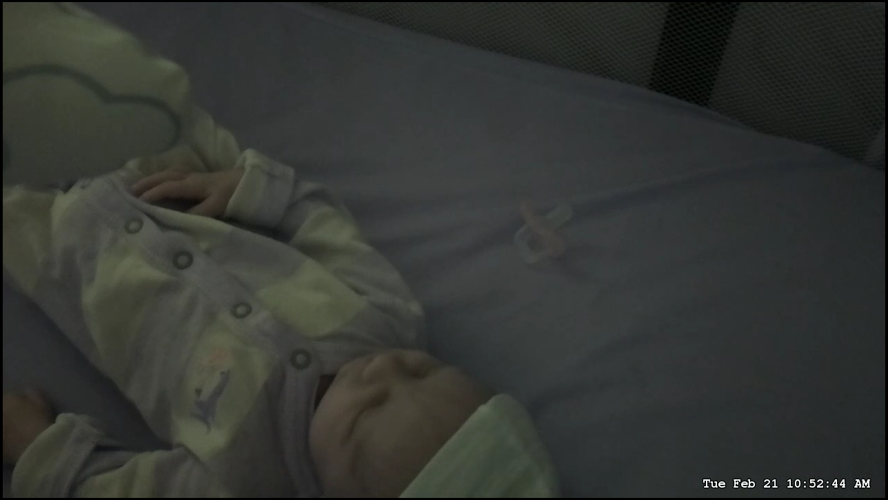
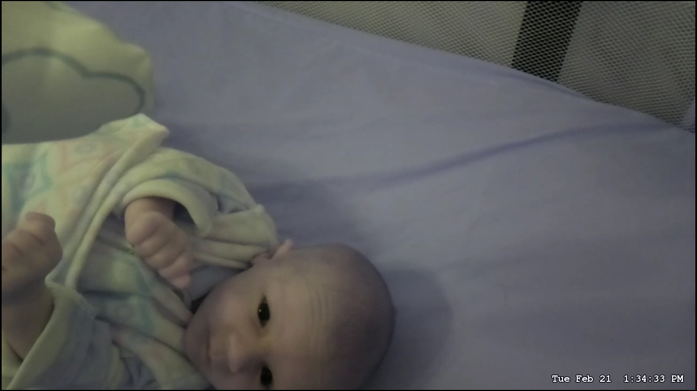
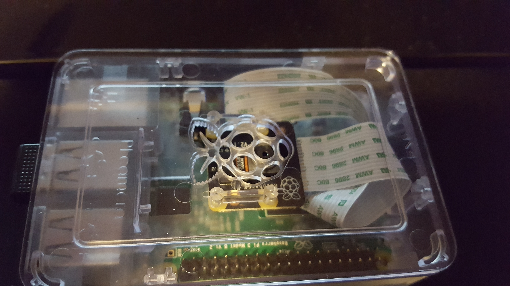
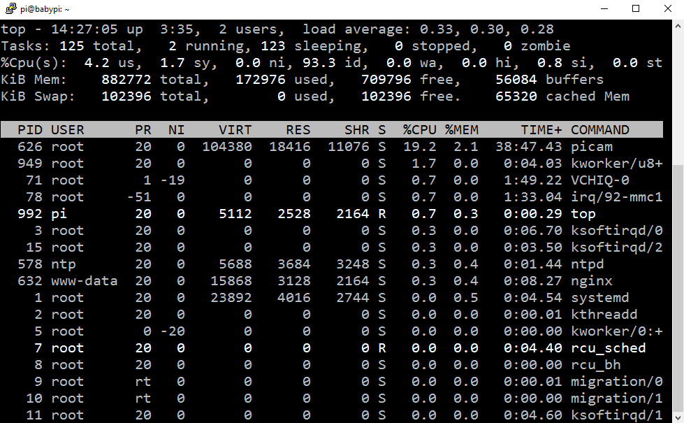
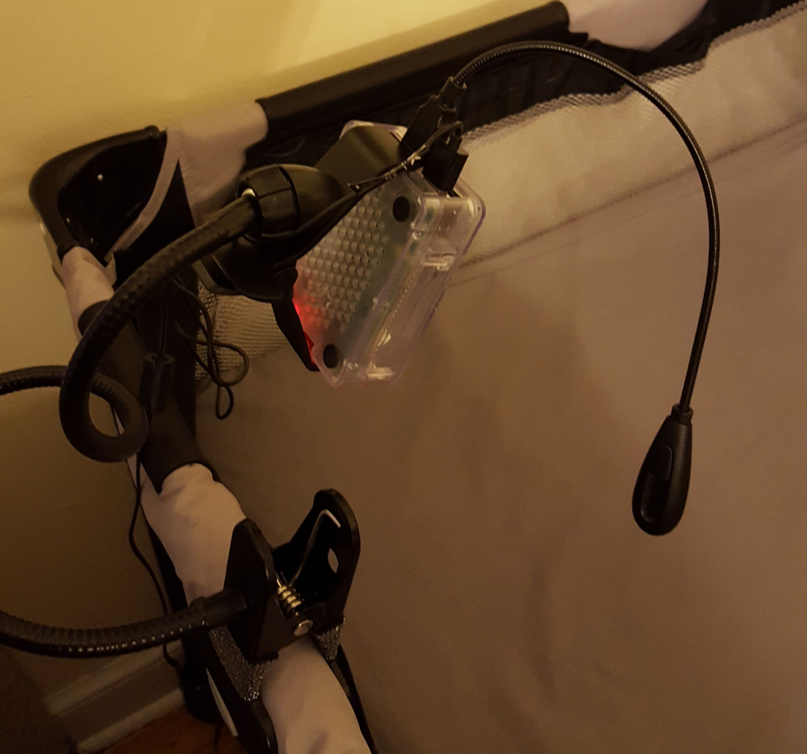
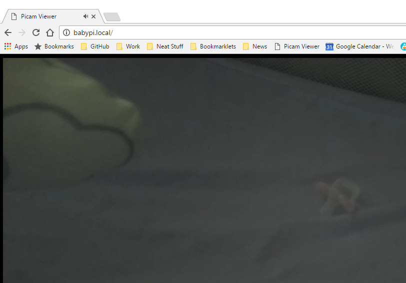

I'm a technologist, speaker, and Pluralsight author and I specialize in building full-stack solutions with a focus on modern web technology and cloud native architecture.

After looking at reviews for baby monitors, a few things were clear:
I knew there had to be a better, more affordable way to keep tabs on our little guy. A Raspberry Pi was a perfect solution--it has a camera module with 1080p resolution, it has USB ports for extra peripherals, it's portable, and it's cheap.
Check out the resulting image quality:
720p, low light

720p, high light

It's possible to reach 1080p with the Pi camera, it's up to you--I found 720p to be perfectly acceptable but 1080p caused the image to "zoom in" a bit too much. If I figure that out, I'll update the guide accordingly.
This guide will show you how to build your own DIY baby monitor using a Raspberry Pi 3. The image and sound will be way better than any low- to mid-level monitors (and cheaper!). Additionally, this will give you a lot of flexibility to add other functionality such as a speaker, etc. Since the Raspberry Pi is under your control, you can choose to expose it only within your home network or securely over the Internet--no weird Internet of Things or cloud "phone home" nonsense or possible vulnerabilities that allow people to view your baby. It will be as secure as your home network and if you choose to expose it publically, you can use encryption and strong passwords to secure it (this guide does not cover that).
picam-viewer installation/run/shm directories are blown away on Pi restarts. The startup script now makes sure they exist (should fix slow feeds).Here's what you'll need, it's what I have and it works great:
You can snag all the hardware needed for ~$100 off Amazon. I went with a 32GB SD card but that's just me, you could configure this to store all videos/photos on a network device or cloud account.
The gooseneck LED light is optional--I want to be able to have the monitor have a night-light attached vs. having to have a separate ambient light at night.
For mounting the Pi, it's up to you. I need to mount it to the bassinet/crib and a clamp-based gooseneck mount is perfect for me (at least until the little guy starts moving around and grabbing things!). You may want to wall-mount it, use cardboard, etc. Use whatever works for you!
I am a developer by trade but I will try to keep this guide as simple as possible. You presumably are ready to get your hands (a little) dirty if you have a Pi but if you're like me, Linux is not your forte. With that in mind I've tried not to assume you know anything about Linux.
The other nice thing about using a Raspberry Pi is that it's easy-to-use! There are a lot of guides and tutorials available for the device.
Originally I had planned to use the Pi NoIR camera module because it can see infrared light. However, since infrared light is still light (just not visible) I didn't really want to take a chance of accidentally "shining" it straight onto my son's face. There is no real evidence to suggest that infrared baby monitors are dangerous to infants--but concentrated IR is still not good to have directed at you. The fact is that nightvision baby monitors probably use a very low light level and it's probably not dangerous at all.
If you want to add nightvision to this monitor, simply replace the normal camera module above with the Pi NoIR Camera module. You will then need to find a suitable infrared light to use at night.
I have opted to use a simple flexible USB light that I can shine specifically where it makes sense and won't be in the baby's line of sight. It has an on/off switch which comes in handy for my wife at night to simply lean over and switch on too.
While I opted for a simple on/off nightlight, you could potentially go crazy with a BlinkStick Nano USB light that is programmable, so you could have it automatically turn on in low-light conditions, program light shows, or what have you.
If you'd like me to do a full video walkthrough of this guide for 2020, check out this video and let me know in the comments!
To install the camera on the Pi, firmly insert the end of the cable with the silver pins facing toward the HDMI port.
The reason I picked the Canakit was because the case allows you to just attach the camera on the inside, allowing an integrated camera.

First things first, we need to configure our Raspberry Pi. The software installation guide on the Raspberry Pi site is perfect and easy to understand.
Follow all the steps until your SD card has NOOBs or Raspbian extracted to it. I used the NOOBS offline (1GB) image.
Connect the Pi via HDMI to a monitor or TV. Connect a mouse/keyboard to the Pi for configuring. Connect an Ethernet cable unless you want to use Wi-Fi during the guide.
Boot up your Pi (i.e. plug it in), you should see a screen showing different options of Operating Systems to install. Select Raspbian, connect to Wi-Fi (or use a Ethernet cable) and begin the installation. Wait for it to complete and then proceed.
Advanced Users: You can SSH into the Pi without using the user interface, you just need to know the IP address (check your router). You also need to use the raw Raspbian image, you can't SSH using the NOOBS installer.
I'm sorry I have to delve into the command-line but because Raspberry Pi is a Linux device, most of the power user features are only available through there. Hey, presumably you're reading this because you want a power user baby monitor! We have to get our hands a little dirty.
Launch the Terminal app on the Pi (it's in the menu bar at the top).
Run the following command:
sudo apt-get update && sudo apt-get -y dist-upgrade
When the prompt changes to a changelog, press Ctrl-C to close the wall of text, then Enter to continue.
This takes awhile! This updates Raspbian to the latest updates including security patches. You want to run this every so often to keep the operating system up-to-date. There are more technical guides on automatic updating so you don't need to login to keep it up-to-date.
Time to configure the Raspberry Pi!
In the terminal, type
sudo raspi-config
babypiThe Raspberry Pi can be pinged and connected to via the hostname babypi.local or whatever name you chose in the last step (plus .local at the end). However, the IP address this defaults to is a long one (IPv6). Web browsers can have trouble connecting to the Pi with this enabled, so we need to disable IPv6 hostname resolution.
sudo nano /etc/avahi/avahi-daemon.conf
On the line use-ipv6=yes change yes to no. Press Ctrl-O to save (hit Enter), then Ctrl-X to exit.
Now reboot! sudo reboot
You should be able to ping your Pi from another machine:
ping babypi.local
ping -4 babypi.local
The second command forces the ping to return the IPv4 address. On Windows you may need the Bonjour service installed if you don't have iTunes installed.
Some devices (my Android phone for example) still won't be able to use babypi.local so you'll still need the IP address of your Pi, which you can see with ip addr show.
Note: I had some issues on Windows trying to access http://babypi.local in my browser. When I pinged my Pi, I got a private address space back (198.105.x.x) instead of the local IP. I changed my router's DNS to Google's public DNS servers and for some reason that worked. I think CenturyLink (my ISP) was somehow interfering since it would always redirect to some proprietary search results page. However, with the knowledge I have of networking and DNS, this still makes no sense to me!
If you plan to have your baby Pi be wireless, you will need to connect it to your Wi-Fi network. To do so, just follow this guide: https://www.raspberrypi.org/documentation/configuration/wireless/wireless-cli.md
Because we want to stream both audio and video from the camera and USB microphone, we need to use a software project called Picam.
Make sure to run all commands from the Pi user directory, i.e. your prompt should look like:
pi@raspberrypi:~ $
The ~ denotes your user's home directory.
Run the following command in the terminal to install some Picam dependencies:
sudo apt-get install libharfbuzz0b libfontconfig1
Then this entire thing (if you are using SSH, just copy/paste otherwise have fun!):
cat > make_dirs.sh <<'EOF'
DEST_DIR=~/picam
SHM_DIR=/run/shm
mkdir -p $SHM_DIR/rec
mkdir -p $SHM_DIR/hooks
mkdir -p $SHM_DIR/state
mkdir -p $DEST_DIR/archive
ln -sfn $DEST_DIR/archive $SHM_DIR/rec/archive
ln -sfn $SHM_DIR/rec $DEST_DIR/rec
ln -sfn $SHM_DIR/hooks $DEST_DIR/hooks
ln -sfn $SHM_DIR/state $DEST_DIR/state
EOF
Then the following, to execute the script we just made and create the required directories:
chmod +x make_dirs.sh
./make_dirs.sh
Now here is important! If you are using Jessie or Stetch on your Pi, you need the right binary file! Thanks to Andrew for pointing this out in the comments.
Jessie or Stretch
Now we install Picam directly using the link above:
wget <URL ABOVE> -O picam.tar.xz
tar xvf picam.tar.xz
cp picam.tar.xz/picam ~/picam/
Buster
If you are using Buster, you can follow the instructions verbatim from the install guide for picam and use the latest binary (1.4.8 as of 8 November 2019).
We now have Picam installed! It's time to get a stream working.
To configure Picam to use our microphone, we need to know what its "device ID" is. Run the following to list any USB recording devices:
arecord -l
The name will be Card # and Device #, so for example, here is mine:
**** List of CAPTURE Hardware Devices ****
card 1: Device [USB Audio Device], device 0: USB Audio [USB Audio]
Subdevices: 1/1
Subdevice #0: subdevice #0
You see "card 1" and "device 0" so my microphone ID will be hw:1,0.
Now, let's make a script we can run to start Picam. Replace "hw:1,0" with your device ID above if it's different.:
echo -e "sudo bash /home/pi/make_dirs.sh\nsudo /home/pi/picam/picam -o /run/shm/hls --time --alsadev hw:1,0 > /var/log/picam.log 2&>1" > run_picam.sh
chmod +x run_picam.sh
This creates a run_picam.sh script in our root (~) directory and marks it as executable. The script starts Picam with a HLS stream output to the RAM drive (fast) and uses our microphone as the recording device. It also writes out the current timestamp in the bottom corner of the stream. There are a ton of other options too including subtitles, etc. The default video resolution is 720p which is fine enough for a babycam.
The script also writes the Picam output to /var/log/picam.log for debugging purposes.
To edit this script anytime after creating, just use:
nano run_picam.sh
The nano editor is very straightforward to use. Ctrl-O to save, Ctrl-X to exit.
Test the script by typing ./run_picam.sh, you should see:
pi@babypi:~ $ ./run_picam.sh
created state dir: ./state
created hooks dir: ./hooks
created directory: ./rec
created directory: ./rec/tmp
created directory: ./rec/archive
created HLS output directory: /run/shm/hls
configuring devices
capturing started
Just press Ctrl-C to exit.
For reference, this is my full run_picam.sh script for my Pi:
sudo bash /home/pi/make_dirs.sh
sudo /home/pi/picam/picam -o /run/shm/hls --samplerate 32000 --channels 2 --audiobitrate 96000 --videobitrate 4000000 --vfr --avclevel 3.1 --autoex --time --alsadev hw:1,0 >/var/log/picam.log 2>&1
There's a great post on how to run a script at startup. We want Picam to run right away when the Pi boots up, so let's do that!
Create the script:
sudo nano /etc/init.d/picam
Then copy/paste the following:
#! /bin/sh
# /etc/init.d/picam
### BEGIN INIT INFO
# Provides: picam
# Required-Start: $remote_fs $syslog $network
# Required-Stop: $remote_fs $syslog $network
# Default-Start: 2 3 4 5
# Default-Stop: 0 1 6
# Short-Description: Simple script to start Picam at boot
# Description: A simple script to start Picam at boot
### END INIT INFO
# If you want a command to always run, put it here
# Carry out specific functions when asked to by the system
case "$1" in
start)
echo "Starting Picam"
# run application you want to start
sudo /home/pi/run_picam.sh
;;
stop)
echo "Stopping Picam"
# kill application you want to stop
killall picam
;;
*)
echo "Usage: /etc/init.d/picam {start|stop}"
exit 1
;;
esac
exit 0
This is an initialization script that will execute our run_picam.sh script we just made.
Mark it as executable:
sudo chmod +x /etc/init.d/picam
Now, let's test it.
sudo /etc/init.d/picam start
You should see the Picam output. Picam is now running in the background! You can stop it manually like this:
sudo /etc/init.d/picam stop
Now let's register it on startup:
sudo update-rc.d picam defaults
All set. We can test it out by rebooting the Pi and verifying the Picam process is running.
sudo reboot
Once the Pi is booted, type top to see running processes. You should see Picam at the top.

We've set up Picam to output a stream to a file but we need to expose that stream so we can connect to it from our devices or web browsers. "nginx" is a web server that can do that for us.
Let's install nginx:
sudo apt-get install nginx
Now let's expose the RAM stream as a directory:
sudo nano /etc/nginx/sites-available/default
In the editor, scroll down to right before location / { and add a new block above it:
location /hls/ {
root /run/shm;
}
This adds a new /hls URL that points to the /run/shm/hls directory Picam is outputting the stream to.
Ensure nginx is started (it will start automatically):
sudo /etc/init.d/nginx start
This starts the web server. Now you can browse (on the Pi or other device) to the root of the site and view the nginx welcome page.
For example, type in http://<ip address>/ to see the default homepage.
Now that we've configured the baby Pi, we need to put it near the baby! As I mentioned at the start, I am just using a simple LED light to help when its dark. With a gooseneck mount, we can also position the monitor in whatever way we need that provides the best view of the crib. What's nice is that you can fit everything you need onto a single Pi, so it can travel with you.


It looks a bit like an angler fish but it does the job!
We're officially all set up! That's all that is needed to use our baby monitor.
In the first part where you configured the Pi, you choose a hostname (or didn't). You can now access the stream URL at http://babypi.local/hls/index.m3u8. You can open that up in any compatible software to view the livestream.
On a PC, Mac, Android, or iOS, I recommend VLC Media Player.
For PC:

The steps are similar for Android and iOS, just choose "Stream" and type in the same URL.
You should now see a live stream with video and audio!
VLC is a nice player but sometimes it might be nice to just hit the Pi directly in a web browser (open a new tab on your computer, etc.).
We can optionally add a stream player to our web server. Follow the steps below:
cd /var/www/html
sudo git clone https://github.com/kamranayub/picam-viewer.git .
IMPORTANT: Ensure you keep the period (
.) at the end of that command! It will download the contents of the Git repository into the current one.
This will bring down a bare metal web player I put together. Feel free to edit it as you see fit. If you changed the URL to where the HLS stream is at on the server, you will need to edit config.json.
Now, open a browser and visit your Raspberry Pi (e.g. http://babypi.local/):

Note: The viewer is very basic right now, I plan to add some functionality to change the exposure, resolution, white balance, and mute settings for Picam as well. Some Raspberry Pi configuration might be nice too such as rebooting. You can contribute back at https://github.com/kamranayub/picam-viewer
I have chosen not to expose my Pi to the internet, instead it sits securely on my network behind my router and is not accessible via the Internet. If you choose to expose it remotely, you will need to do the following to ensure it's secure:
These steps are outside the scope of this guide but there are many tutorials online for Nginx, port forwarding, and SSL that you can follow to achieve this. If someone wants to write it up, I will happily add it to this guide! Just remember as soon as you allow your Pi to be exposed, you need to make sure it's the server is secure and encrypted.
No spam and I usually send a newsletter once a quarter with content you won't see on the blog.